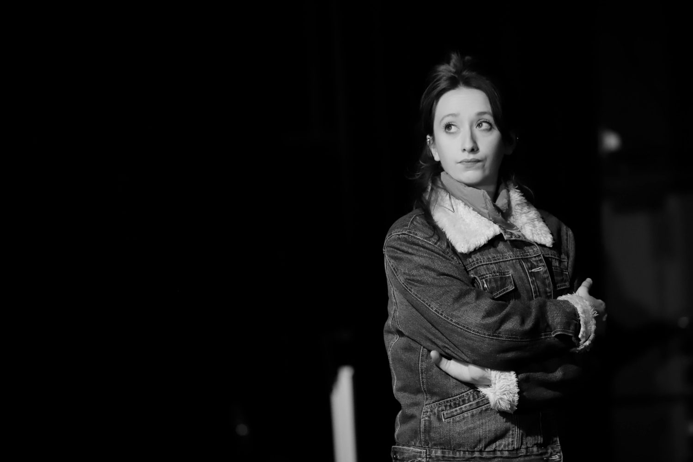
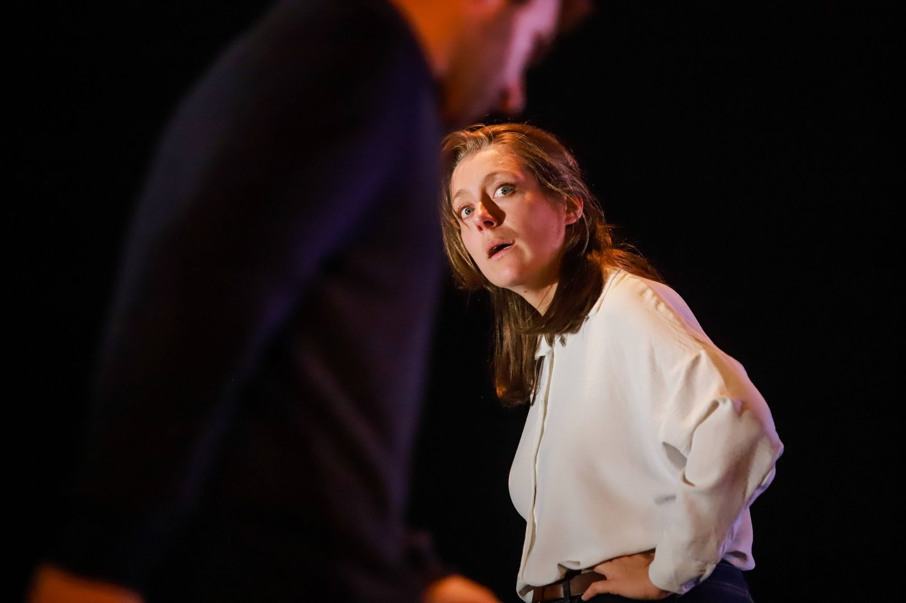
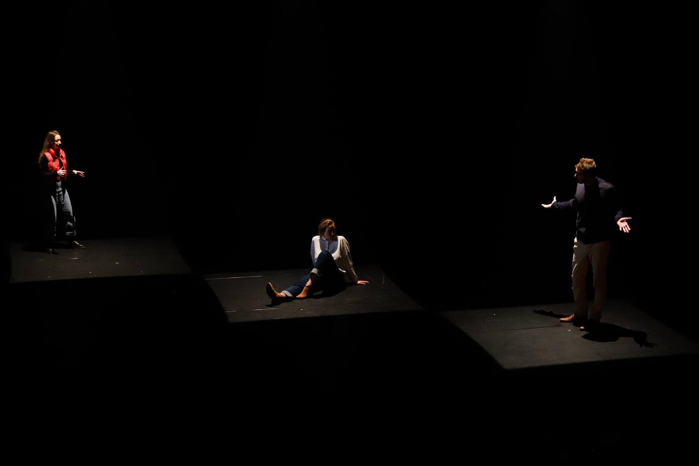
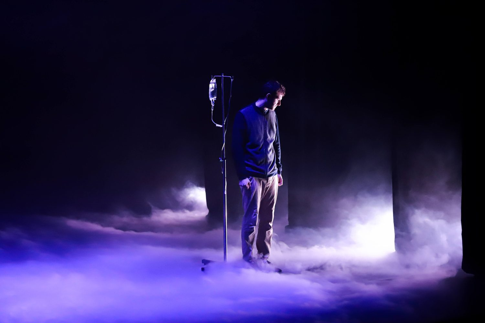
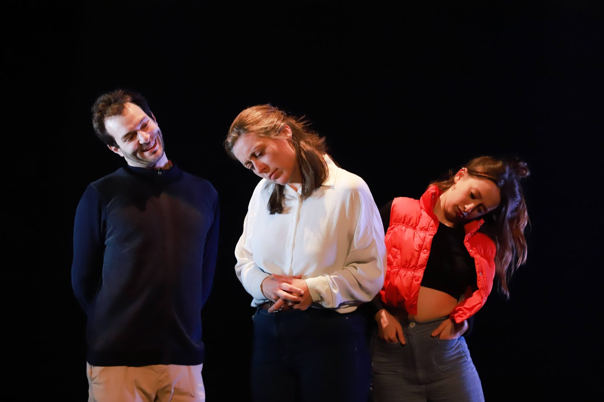

2023
Fulguré.e.s
Rôle Adrien / Le jeune mec / Jerem
Compagnie Alchimie — Amélie Chalmey
Une fratrie. Un village. Perdu.
La foudre y a frappé il y a quelques années et y a laissé des survivant.e.s : les fulguré.e.s. À l’occasion d’un nouvel an, la fratrie s’y perd et rencontre ses habitants. Alors que « tout est chaos », la foudre frappe à nouveau.
Photographies






Photographies : Thypa Photographie
Distribution
- Lia Alamichel
- Amélie Chalmey
- Adrien Vada